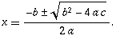

Hi ill be here every day if i can. Ask for advice on problems and have other member sof the community as well as me answer it. I love to help people with problems, i practvcally live to help others in suffering. So start asking away, i will try to answer everyones question.
i believe suki made pretty much the same thread in B&T which has since been taken over by iangb i believe, but please go on, tell me how to write this friggen essay that im completely blanking out on 
Yeah. And if you're going to talk about sex and drugs, it belongs in B&T.
(Correct me if I'm wrong)
(Correct me if I'm wrong)
And also, I advise to actually grow up some (literally). Many members are older than you, (Me also) and have problems that Im sure you wouldn't understand. Its not a rude statement. Thats not my point. My point is is that you need more experience that what you have. Not at 12 years old.
Yeah. And if you're going to talk about sex and drugs, it belongs in B&T.
(Correct me if I'm wrong)
You're roughly correct.
Fol67, Wheat or Rye with my ham sandwich?
Fol67, Wheat or Rye with my ham sandwich?
wheat,
and its in serious discusion because in ask suki thees people asking questions like this guy. SERIOUS discusion. And i sed every one can answer each others questions smarty pants. In ask suki u got flamed for answering sukis questions. For the record you can talk about near anything and i WILL know what your talkng about.

Quote: MeSukian, what can I do to erase my draw shot with my two iron is golf? How can I correct my upper down swing so that I get my preferred trajectory?
I asked this in the thread in BnT, yet got no answer. Im assuming Fol67 knows enough about golf to give me a constructive answer.
I already made a thread like this, anyway. If you all want some quality help for your dilemmas, go here: http://metanet.2.forumer.com/index.php?showtopic=5162&hl=
I wouldn't trust a guy who lost his virginity at 11 for his advice on... basically anything.
Hi ill be here every day if i can. Ask for advice on problems and have other member sof the community as well as me answer it. I love to help people with problems, i practvcally live to help others in suffering. So start asking away, i will try to answer everyones question.
I hate to be an arse but I just don't buy that you "practically live to help others in suffering";
i got a *lude sexual act* in computer class from the sexiest girl in my class, and my best friend ho had a crush on her saw and i bragged to him about it anyway and he got so pissed at me.Yeah, real Good Samaritan, aren't you?
Hi ill be here every day if i can. Ask for advice on problems and have other member sof the community as well as me answer it. I love to help people with problems, i practvcally live to help others in suffering. So start asking away, i will try to answer everyones question.
My homework:
Solve:
2x - y = 11
xy - y = 12
Cos I'm clueless.
I wouldn't trust Fol67's advice because of what RWSE said and that he is a satanist.
at amlt:
2x-11=y
therefore:
x(2x-11)- (2x-11)(2x-11)=12
2x - 11x -(4x - 121 - 22x - 22x) = 12
2x - 11x -4x + 121 + 44x = 12
-2x + 33x +109 = 0
2x - 33x - 109 = 0
not sure if that will help yet (havent finished)
2x-11=y
therefore:
x(2x-11)- (2x-11)(2x-11)=12
2x - 11x -(4x - 121 - 22x - 22x) = 12
2x - 11x -4x + 121 + 44x = 12
-2x + 33x +109 = 0
2x - 33x - 109 = 0
not sure if that will help yet (havent finished)
I understand that bit, I am just clueless as to where to go from there 
All the books I have, and the internet as well doesn't seem to cover linear and quadratic equations in the same sum..
All the books I have, and the internet as well doesn't seem to cover linear and quadratic equations in the same sum..
once you have that quadratic equation, you can sove it to get (probably, I haven't looked at it) two different valid values for x.
Plug those seperately into the original y=2x-11 equation to get two corresponding y values, and there you have your answer(s).
Plug those seperately into the original y=2x-11 equation to get two corresponding y values, and there you have your answer(s).
at amlt:Hmm. (2x - 11) = (4x - 44x + 121)
2x-11=y
therefore:
x(2x-11)- (2x-11)(2x-11)=12
2x - 11x -(4x - 121 - 22x - 22x) = 12
2x - 11x -4x + 121 + 44x = 12
-2x + 33x +109 = 0
2x - 33x - 109 = 0
not sure if that will help yet (havent finished)
So your final equation is wrong. The correct equation is
2x - 11x - 4x + 44x - 121 = 12
-2x + 33x - 133 = 0
2x - 33x + 133 = 0
Use the quadratic formula to solve:

where a = 2, b = -33, and c = 133
You'll get these roots:
x = 7 and 9.5
Now just backsubstitute for both solutions, and you're done. You'll have two sets of coordinates because the linear equation intersects the other one twice.
I wouldn't trust Fol67's advice because of what RWSE said and that he is a satanist.
Hey what my religion go t to do wit hanything, besides satanists have a srict code of lawys to sbide by. One of which is do not lie. And i DIDNT lose my virginity if ytou read the whole post i sed i DID NOT have "it". As for me persorming a lude act with a girl, that does not impare on my ability to help iothers and my smex life has nothing to do wit this. And asd for i do not live to help others with troubles, satanists love pain(not to inflict it) and i some what "feed" off of others problems.
Quote: MeSukian, what can I do to erase my draw shot with my two iron is golf? How can I correct my upper down swing so that I get my preferred trajectory?
I asked this in the thread in BnT, yet got no answer. Im assuming Fol67 knows enough about golf to give me a constructive answer.
1. Note that these steps are intended for right-handers - reverse them if you're left-handed.
2. Set up your golf shot with your usual alignment and grip.
3. Adjust your feet to aim to the right of your target. The angle of your feet depends on your individual swing and desired results, and can range from 5 to 45 degrees. Try 10 to 15 degrees to the right to start.
4. Aim the club face directly at your target and use your normal grip.
5. Swing normally.
6. Resist the temptation to turn too soon and watch the ball's flight.
-ehow.com
Hmm. (2x - 11) = (4x - 44x + 121)
So your final equation is wrong. The correct equation is
2x - 11x - 4x + 44x - 121 = 12
-2x + 33x - 133 = 0
2x - 33x + 133 = 0
Use the quadratic formula to solve:
where a = 2, b = -33, and c = 133
You'll get these roots:
x = 7 and 9.5
Now just backsubstitute for both solutions, and you're done. You'll have two sets of coordinates because the linear equation intersects the other one twice.
Hmm thanks, I'll try that in future with questions like that

Lol im taking pre algebra right now,you have a choice between normal and pre algebra. But i forgot thisHmm. (2x - 11) = (4x - 44x + 121)Hmm thanks, I'll try that in future with questions like that
So your final equation is wrong. The correct equation is
2x - 11x - 4x + 44x - 121 = 12
-2x + 33x - 133 = 0
2x - 33x + 133 = 0
Use the quadratic formula to solve:
where a = 2, b = -33, and c = 133
You'll get these roots:
x = 7 and 9.5
Now just backsubstitute for both solutions, and you're done. You'll have two sets of coordinates because the linear equation intersects the other one twice.
is still infinaty right?Quote3x<infinaty>to the 3rd
Fol67, Infinity isnt a number, its the process of counting numbers indefinitley
1. Note that these steps are intended for right-handers - reverse them if you're left-handed.Quote: MeSukian, what can I do to erase my draw shot with my two iron is golf? How can I correct my upper down swing so that I get my preferred trajectory?
I asked this in the thread in BnT, yet got no answer. Im assuming Fol67 knows enough about golf to give me a constructive answer.
2. Set up your golf shot with your usual alignment and grip.
3. Adjust your feet to aim to the right of your target. The angle of your feet depends on your individual swing and desired results, and can range from 5 to 45 degrees. Try 10 to 15 degrees to the right to start.
4. Aim the club face directly at your target and use your normal grip.
5. Swing normally.
6. Resist the temptation to turn too soon and watch the ball's flight.
-ehow.com
Ive been playing golf for years, and Ive learned some things. If oyu have a problem, dont just try ot compensate for them. FIX them. If you just compensate the problem grows and grows until major actions are necessary.
No offense, but if I wanted help on how to set up to the ball, aim to one direction, I would know to just look it up myself, not ask a forum. And Im talking about a specific club, and a specific part of its swing.
My point was to prove that you relaly cant help every problem, and that if I already didn't get help from Iangb, not much of a chance here.
Its a good notion, but you just dont have enough experience in many fields of help. Like the algebra, your only in algebra 1, and many problem that arise will be needed for highere level maths. And, people like TCG can help with that. Hence his name, (TheCalcGenius)
Thecalcgenius should open up his own thread for helping people with math...

Thecalcgenius should open up his own thread for helping people with math...
I'm in Pre-Calculus right now, (I'm advanced) and I've been away from Algebra for so long now that I didn't realize how to do the problem AMLT posted for a second...
 I've been doing logarithms and summations mostly.
I've been doing logarithms and summations mostly.Ive been playing golf for years, and Ive learned some things. If oyu have a problem, dont just try ot compensate for them. FIX them. If you just compensate the problem grows and grows until major actions are necessary.1. Note that these steps are intended for right-handers - reverse them if you're left-handed.Quote: MeSukian, what can I do to erase my draw shot with my two iron is golf? How can I correct my upper down swing so that I get my preferred trajectory?
I asked this in the thread in BnT, yet got no answer. Im assuming Fol67 knows enough about golf to give me a constructive answer.
2. Set up your golf shot with your usual alignment and grip.
3. Adjust your feet to aim to the right of your target. The angle of your feet depends on your individual swing and desired results, and can range from 5 to 45 degrees. Try 10 to 15 degrees to the right to start.
4. Aim the club face directly at your target and use your normal grip.
5. Swing normally.
6. Resist the temptation to turn too soon and watch the ball's flight.
-ehow.com
No offense, but if I wanted help on how to set up to the ball, aim to one direction, I would know to just look it up myself, not ask a forum. And Im talking about a specific club, and a specific part of its swing.
My point was to prove that you relaly cant help every problem, and that if I already didn't get help from Iangb, not much of a chance here.
Its a good notion, but you just dont have enough experience in many fields of help. Like the algebra, your only in algebra 1, and many problem that arise will be needed for highere level maths. And, people like TCG can help with that. Hence his name, (TheCalcGenius)
Our teacher told u its number but w/e shes wong alot. Wel thanks for da math help.
Heh. I'm like Twistkill. But for someone who's a satanist, can't spell, and is in pre-algebra to open an advice column is a joke.
Oh, and could you actually give me a relevant response Fol67? please?
Oh, and could you actually give me a relevant response Fol67? please?
Rather you dont think he should have opened the thread or not doesnt mean you have to incesintly flame him more or less. He might be quirky but i can tell the kid is good-hearted.
He might be quirky but i can tell the kid is good-hearted.
You dont have the best intuitave skills, aye? Satanist, let me remind you. He meant good, but I cant really call a satanist good hearted.
Im just messing with ya, but still
Heh. I'm like Twistkill. But for someone who's a satanist, can't spell, and is in pre-algebra to open an advice column is a joke.
Haha. Ok well the satanist thing doesn't really bother me too much. What bothers me the most is the accuracy of his typing/spelling. To just see a post like his doesn't make me want to ask him anything. Plus i would much rather just get advice from iangb.
P.s. If this sounds harsh, don't get too offended, i think most of the other people that have posted here have a similar opinion anyway.
P.s.s, I also noticed that one of the main pieces of 'advice' that you gave here were just copied off another site. I mean couldn't people just do that themselves anyway? I thought you were going to personally answer peoples questions with your vast knowledge and many years of personal experience?

I copied of off of ehow because i didnt want to ignore question but i did not answer it personaly because i do not play golf. And no im not offended at all. And you the one adressing me as "satanist", i have a name genious. And what does my religious beleiefs have to do with answering questions?
I copied of off of ehow because i didnt want to ignore question but i did not answer it personaly because i do not play golf. And no im not offended at all. And you the one adressing me as "satanist", i have a name genious. And what does my religious beleiefs have to do with answering questions?Omg! Did you not read my post? Did you not read where i put 'the satanist thing doesn't really bother me'? If you are mistaken then that point was meant to say that I'm not bothered about your religion, if you are a satanist or not. So don't accuse me of labelling you a satanist. I agree with you on this, your religion would not affect your advice, unless it was a question about religion.
... what does my religious beleiefs have to do with answering questions?
I saw you ask that in a previous post, and I assumed someone answered, but since you're posting it again, I guess no one responded.
I'd give VERY different advice or judge various situations totally differently if I weren't a Christian.
The religion of the person answering doesnt matter. Him having a certain religion wouldn't stop me from asking him. What would stop m is the ANSWERS he gets, due to the fact that his religion shapes him.
Obby, i have read that post many times to try and understand what your saying, but you are very contradictory. You say that you have no problem asking someone of a particular religion, but that you wouldn't want to ask them because their religion would affect their answer.
I mean you say that you wouldn't ask because of his religion, but you start the post saying that religion doesn't matter.
You say that you have no problem asking someone of a particular religion, but that you wouldn't want to ask them because their religion would affect their answer.I mean you say that you wouldn't ask because of his religion, but you start the post saying that religion doesn't matter.
Lol ill try not to let my religon cloud my judgemen, i promise. @wedgie- iw asnt talking about you dude. I was talking bout someone else, lol.
Obby, i have read that post many times to try and understand what your saying, but you are very contradictory.
I mean you say that you wouldn't ask because of his religion, but you start the post saying that religion doesn't matter.
Its really hard to say. I guess another way to say it is...
The fact that their religion opposes my views would not stop me from asking, but rather the answer they have. (which could be swayed by their religion)
If thats still confusion, then forget about it. Its hard to say, so sorry.
@Fol, Do you think my avatar fits my persona? 
@Fol, Do you think my avatar fits my persona?
Yes, very much so. Though i think a full auto gun would be a better avy for you^.^
@Fol, Do you think my avatar fits my persona?Yes, very much so. Though i think a full auto gun would be a better avy for you^.^
Then you dont know him well enough. Maybe you two PM each other a lot, but from what I know of McP, his current one is definitely the right one.
I wouldn't trust Fol67's advice because of what RWSE said and that he is a satanist.Hey what my religion go t to do wit hanything, besides satanists have a srict code of lawys to sbide by. One of which is do not lie. And i DIDNT lose my virginity if ytou read the whole post i sed i DID NOT have "it". As for me persorming a lude act with a girl, that does not impare on my ability to help iothers and my smex life has nothing to do wit this. And asd for i do not live to help others with troubles, satanists love pain(not to inflict it) and i some what "feed" off of others problems.
I didn't say the lude act was the bad thing. My point was that you rubbed it in your supposed best friend's face because he fancied her. That isn't a nice thing to do. You expect me to believe that you "live to help the suffering" if you've done that?
I don't buy an ounce of it.
Hey what my religion go t to do wit hanything, besides satanists have a srict code of lawys to sbide by. One of which is do not lie.
.......
And asd for i do not live to help others with troubles, satanists love pain(not to inflict it) and i some what "feed" off of others problems.
You don't have a great concept of Satanism, do you? I'm not at all familiar with the concepts involved with Satanism but I have read the Wikipedia article, frankly I think you don't know quite what you're talking about.
For example... can you source me something that references that Satanists can't lie? If not I guess it was a lie, which isn't all bad since you can lie.
As for the whole "helping others" thing, Satanists' philosophy is that life should be centred around you - after all you're living it. Satanists do not "love pain". One or two may do, most likely the more well-known evil-doers, who don't tend to have such a philosophy, in my opinion those sorts are just complete nutters. Of course, in my opinion the normal Satanists are nutters themselves, but not nearly so much. I'm giving you a chance here Fol, I just want to know how much you know about your religion.
Incidentally, a guy called Anton LaVey, who is kind of the most influential figure in Satanism, outlined 11 general guidelines for Satanists, the first of which is kind of ironic. And the 2nd. It also gives a rough idea of more Satanism. (
 Wikipedia)
Wikipedia)1. Do not give opinions or advice unless you are asked.
2. Do not tell your troubles to others unless you are sure they want to hear them.
3. When in anothers lair, show him respect or else do not go there.
4. If a guest in your lair annoys you, treat him cruelly and without mercy.
5. Do not make sexual advances unless you are given the mating signal.
6. Do not take that which does not belong to you unless it is a burden to the other person and he cries out to be relieved.
7. Acknowledge the power of magic if you have employed it successfully to obtain your desires. If you deny the power of magic after having called upon it with success, you will lose all you have obtained.
8. Do not complain about anything to which you need not subject yourself.
9. Do not harm little children.
10. Do not kill non-human animals unless you are attacked or for your food.
11. When walking in open territory, bother no one. If someone bothers you, ask him to stop. If he does not stop, destroy him.
I AM IN DESPERATE NEED OF GUIDANCE!
You know the word for 'cute' in Japanese? Does it have one or two 'I's?
I NEED TO KNOW!!!
You know the word for 'cute' in Japanese? Does it have one or two 'I's?
I NEED TO KNOW!!!
I AM IN DESPERATE NEED OF GUIDANCE!Kawaii. Two i's.
You know the word for 'cute' in Japanese? Does it have one or two 'I's?
I NEED TO KNOW!!!
Hey what my religion go t to do wit hanything, besides satanists have a srict code of lawys to sbide by. One of which is do not lie.You don't have a great concept of Satanism, do you? I'm not at all familiar with the concepts involved with Satanism but I have read the Wikipedia article, frankly I think you don't know quite what you're talking about.
.......
And asd for i do not live to help others with troubles, satanists love pain(not to inflict it) and i some what "feed" off of others problems.
For example... can you source me something that references that Satanists can't lie? If not I guess it was a lie, which isn't all bad since you can lie.
As for the whole "helping others" thing, Satanists' philosophy is that life should be centred around you - after all you're living it. Satanists do not "love pain". One or two may do, most likely the more well-known evil-doers, who don't tend to have such a philosophy, in my opinion those sorts are just complete nutters. Of course, in my opinion the normal Satanists are nutters themselves, but not nearly so much. I'm giving you a chance here Fol, I just want to know how much you know about your religion.
Incidentally, a guy called Anton LaVey, who is kind of the most influential figure in Satanism, outlined 11 general guidelines for Satanists, the first of which is kind of ironic. And the 2nd. It also gives a rough idea of more Satanism. (
1. Do not give opinions or advice unless you are asked.
2. Do not tell your troubles to others unless you are sure they want to hear them.
3. When in anothers lair, show him respect or else do not go there.
4. If a guest in your lair annoys you, treat him cruelly and without mercy.
5. Do not make sexual advances unless you are given the mating signal.
6. Do not take that which does not belong to you unless it is a burden to the other person and he cries out to be relieved.
7. Acknowledge the power of magic if you have employed it successfully to obtain your desires. If you deny the power of magic after having called upon it with success, you will lose all you have obtained.
8. Do not complain about anything to which you need not subject yourself.
9. Do not harm little children.
10. Do not kill non-human animals unless you are attacked or for your food.
11. When walking in open territory, bother no one. If someone bothers you, ask him to stop. If he does not stop, destroy him.
No the form i follow is a a newer form of the older religions like the anicient maya religions. I completely disackloldge any loyaltoy to anton lavey or w./e his name is. And for the , dont lie thing. I was breaking the rules. Christians arent suppiosed to lie but they do, so dont pull that on me, and for when i mocked my friend, we have known each other for 6 years and we do shit like that to each other all the time, one time he even told a girl i liked that i called a bitch even though i never did, so me and him are kool about stuff like that.
")
... And for the , dont lie thing. I was breaking the rules. Christians arent suppiosed to lie but they do, so dont pull that on me...Oh, so if you saw someone kill a guy right in front of you, you'd suddenly think killing is okay?
From what I can tell, you seem to follow people a lot and use their wrongs to justify your own.
YOU are responsible for YOUR OWN actions. Everyone who participates in a flame war is equally warned, regardless of who started it.
I think he picked Satanism because it makes him stand out a lot. He just assumed they do mean things (even though a lot of their beliefs involve ways not to be a dick) and decided to go with that. I doubt he really understands the depths of the philosophy. It just makes him totally rad.
I think he picked Satanism because it makes him stand out a lot. He just assumed they do mean things (even though a lot of their beliefs involve ways not to be a dick) and decided to go with that. I doubt he really understands the depths of the philosophy. It just makes him totally rad.
Complete Mock-age
I think he picked Satanism because it makes him stand out a lot. He just assumed they do mean things (even though a lot of their beliefs involve ways not to be a dick) and decided to go with that. I doubt he really understands the depths of the philosophy. It just makes him totally rad.I didnt do it for attention. And i do read philosophy for your information and potry aas well*coughs poe rules*. Why must you constantly bash me and say i did it t be different? your a *your religion here* becasue you thot it would make you "rad". see I can talk llike an idiot to, but it doesnt make me right.

who the hell do you think you are saying i think hurting people is cool anyway? Huh what does? You seem like the kind of person who walks around picking fight because hes unstable and emotionally troubled. So just screw off, you dont know anything about me. Go ahead and flash a warn or ban in my face dave or tetris or whatever you call yourself. Like i give a crap.
...to be honest, fol, it does seem like you've picked an attention-seeking religion. Mainly because of posts like this, which do sound kinda misinformed:
You also can't seem to make your mind up whether you like your religion or not:
From an outside point of view, this just adds up to... attention seeking. We could be wrong, but that's what it seems.
EDIT: the 'contradictory' part of this post has been copied to the Religion thread, 'cos it's relevant. Feel free to argue it there.
QuoteOne god only beat satan once, 2 god didnt create satan, 3 he couldnt take it away satan and his demons would kick gods sissy ass, 4 dont push your beliefs if you dont want me to bash that sack of cra* you call god.
You also can't seem to make your mind up whether you like your religion or not:
Quote: Fol67 @ signatureA Satanist and proud of it
See?QuoteYeah ok. Im not being emotional, i don't even like bein a satanist but i signed the blood contract. I can never go back to christianity and be accepted. So im bound. You think i like being in a religon that many people blindly hate? Well i dont and id like to go to heaven but i signed on the dotted line with my blood. Though i do like the part where i can do magick ^.^,,,,.
From an outside point of view, this just adds up to... attention seeking. We could be wrong, but that's what it seems.
EDIT: the 'contradictory' part of this post has been copied to the Religion thread, 'cos it's relevant. Feel free to argue it there.
who the hell do you think you are saying i think hurting people is cool anyway? Huh what does? You seem like the kind of person who walks around picking fight because hes unstable and emotionally troubled. So just screw off, you dont know anything about me. Go ahead and flash a warn or ban in my face dave or tetris or whatever you call yourself. Like i give a crap.
I need 540 mg of chill pill, stat!
I could care less to issue a warn or whatever--I think it would only fuel your needy expectations of the forums.
No the form i follow is a a newer form of the older religions like the anicient maya religions. I completely disackloldge any loyaltoy to anton lavey or w./e his name is.Firstly, I totally agree with Dave and iangb here.
As for the quote, I fail to understand how Satanism is connected with Ancient Maya stuff. It basically has absolutely nothing to do with it. It's all about how they think time starts over at different intervals, and supernatural beings - interesting, but not backed up by events in any way. I wouldn't say that this still goes on today, especially not as any form of Satanism. Please just explain your religion concisely for us. (Maybe it's just me who is so frustrated with this, I'm sure other people will be interested though.)
I'm not sure of the details, but I'm pretty sure it's Satanism of the sort that is, basically, attention-seeking.
I mean the sort where they're worshiping Satan - the enemy of God, once an angel but cast down. The sort that accepts that God created everything, but then deliberately reveres His Enemy for... basically, for rebellions sake.
But I could be wrong.
I mean the sort where they're worshiping Satan - the enemy of God, once an angel but cast down. The sort that accepts that God created everything, but then deliberately reveres His Enemy for... basically, for rebellions sake.
But I could be wrong.
Fol67, from my point of view, I think you're trying to hard to be something. There's a hell of a lot of pretension and front about you - you're a satanist, and you love helping the suffering. Whilst these are both characteristics that I have nothing against (particularly the latter) I get the feeling that you feel like letting us know you fufill the characteristics not because that's the person you are, but because it's the person you want us to think you are.
Stop trying so hard. The only true way you can leave an impression around here is by being a good member of the community. Try that.
Stop trying so hard. The only true way you can leave an impression around here is by being a good member of the community. Try that.
No the form i follow is a a newer form of the older religions like the anicient maya religions. I completely disackloldge any loyaltoy to anton lavey or w./e his name is.Firstly, I totally agree with Dave and iangb here.
As for the quote, I fail to understand how Satanism is connected with Ancient Maya stuff. It basically has absolutely nothing to do with it. It's all about how they think time starts over at different intervals, and supernatural beings - interesting, but not backed up by events in any way. I wouldn't say that this still goes on today, especially not as any form of Satanism. Please just explain your religion concisely for us. (Maybe it's just me who is so frustrated with this, I'm sure other people will be interested though.)
We belive that pagan gods are demons, and for those asking for info joyofsatan.com should clear my beliefs up.
Noooooo!!
[attempt to drown out an embarassing post]
BOLLOCKS BOLLOCKS BOLLOCKS BOLLOCKS BOLLOCKS BOLLOCKS BOLLOCKS
[/attempt]
Don't click on that link. Oh, Christ, whatever you do, don't click on that link.
Fol's only a kid. He doesn't know what bullshit the Church of Satan has become. These websites are an abomination of LaVey's proposed philosophy and greatly conflict with the Satanism that LaVey intended.
Anyone who believes that rubbish has clearly not read his Satanic Bible.
That being said, to avoid future shame, I want to state right here and now that I dissociate myself entirely from anything Fol has to say about Satanism. I do this in the same way a peaceful Muslim dissociates himself with the Taliban, or any other mindset that butchers the original philosophy.
[attempt to drown out an embarassing post]
BOLLOCKS BOLLOCKS BOLLOCKS BOLLOCKS BOLLOCKS BOLLOCKS BOLLOCKS
[/attempt]
Don't click on that link. Oh, Christ, whatever you do, don't click on that link.
Fol's only a kid. He doesn't know what bullshit the Church of Satan has become. These websites are an abomination of LaVey's proposed philosophy and greatly conflict with the Satanism that LaVey intended.
Anyone who believes that rubbish has clearly not read his Satanic Bible.
That being said, to avoid future shame, I want to state right here and now that I dissociate myself entirely from anything Fol has to say about Satanism. I do this in the same way a peaceful Muslim dissociates himself with the Taliban, or any other mindset that butchers the original philosophy.
I completely disackloldge any loyaltoy to anton lavey or w./e his name is.Case-in-motherfucking-point.
Id like to point out that Fol said that he doesnt want to be a satanist, yet he is proud of it. Check SD.
What a load of crap.
My opinion only.
My opinion only.
We belive that pagan gods are demons, and for those asking for info joyofsatan.com should clear my beliefs up.
[21:39] <Rince^stufftodo> Let's play "find a phrase on http://joyofsatan.com/ which contradicts something Fol67 has said".
1: [21:42] <AzMiLion> the word Encrochian,nor a blood pact is never named on that ENTIRE SITE
We later discovered that you just messed up, and it's Enochian. The point remains that that this joining ritual is all fake.
2: [21:43] <RincewindSW> We DO NOT advocate or participate in any blood or living sacrifice.
3: [21:54] <RincewindSW> So, also there is no mention of Maya rituals etc. on that site.
Most importantly, Tsukatu is right. This is nothing like Satanism as a religion.
One other thing: 2 Satanist threads going on at once isn't good news! Maybe a merge is needed.
Noooooo!!Dave get me a chill pill and stat!!
[attempt to drown out an embarassing post]
BOLLOCKS BOLLOCKS BOLLOCKS BOLLOCKS BOLLOCKS BOLLOCKS BOLLOCKS
[/attempt]
Don't click on that link. Oh, Christ, whatever you do, don't click on that link.
Fol's only a kid. He doesn't know what bullshit the Church of Satan has become. These websites are an abomination of LaVey's proposed philosophy and greatly conflict with the Satanism that LaVey intended.
Anyone who believes that rubbish has clearly not read his Satanic Bible.
That being said, to avoid future shame, I want to state right here and now that I dissociate myself entirely from anything Fol has to say about Satanism. I do this in the same way a peaceful Muslim dissociates himself with the Taliban, or any other mindset that butchers the original philosophy.
I completely disackloldge any loyaltoy to anton lavey or w./e his name is.Case-in-motherfucking-point.
___________
1-I misspelled and a link to the sacrafice page http://www.angelfire.com/empire/serpentis666/SATANIC.html
2-they are contriding themselves.........
3-mayan gods are classifeied as pagan gods and we believed they are demons
*discaimer*i dont follow satanism anymore i was clearing up this guys post i repeat i do not follow satanism anymore.
If you really meant that you "disackloldge any loyaltoy to anton lavey or w./e his name is" (you'd better believe that's a sic), you are not practicing Satanism. You are instead practicing a bizarre combination of Neo-Paganism and Christianity, but with mixed-up terminology.
Fol, don't talk in this thread anymore until you've read the first half of Anton LaVey's Satanic Bible. The closer the edition to the latest (ninth), the better.
Fol, don't talk in this thread anymore until you've read the first half of Anton LaVey's Satanic Bible. The closer the edition to the latest (ninth), the better.
you randomly change your religion? im gonna go out on a lim here and say, EVERYTHING YOU HAVE SAID IN THIS THREAD HAS BEEN BS (bullsh*t)
Read the Religion thread in SD, smartalco. It explains a bit.
If you really meant that you "disackloldge any loyaltoy to anton lavey or w./e his name is" (you'd better believe that's a sic), you are not practicing Satanism. You are instead practicing a bizarre combination of Neo-Paganism and Christianity, but with mixed-up terminology.
Fol, don't talk in this thread anymore until you've read the first half of Anton LaVey's Satanic Bible. The closer the edition to the latest (ninth), the better.
ITs not Neo-paganism its paganism, and smartalco please reasd the religon thread like iangb said. I just think religon is more trouble than its worth. I will alos be suppressing my sexuality. I will be a normal person
I'm not going to lie to you, Fol. Most people don't consider someone who would "do" a dead body normal.
I can't stress enough that I am saying these are my beliefs, but rather these are beliefs of many people.
I can't stress enough that I am saying these are my beliefs, but rather these are beliefs of many people.
I already said i would supress my odd sexual tendencies, what more d want?
I dont expect anything. I was just stating a fact.
If you really meant that you "disackloldge any loyaltoy to anton lavey or w./e his name is" (you'd better believe that's a sic), you are not practicing Satanism. You are instead practicing a bizarre combination of Neo-Paganism and Christianity, but with mixed-up terminology.
Fol, don't talk in this thread anymore until you've read the first half of Anton LaVey's Satanic Bible. The closer the edition to the latest (ninth), the better.
Is that an order or request?
Probably the fact that its Tsukatu and "Don't talk in this thread" means its an order.
Fol: Shut up. I won't say it again.
Read your fucking Satanic Bible, and then you can talk in this thread.
Read your fucking Satanic Bible, and then you can talk in this thread.
Fol: Shut up. I won't say it again.
Read your fucking Satanic Bible, and then you can talk in this thread.
pwnage.
*almost hops on the 'Suki bandwagon*